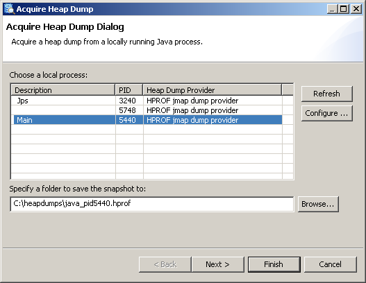
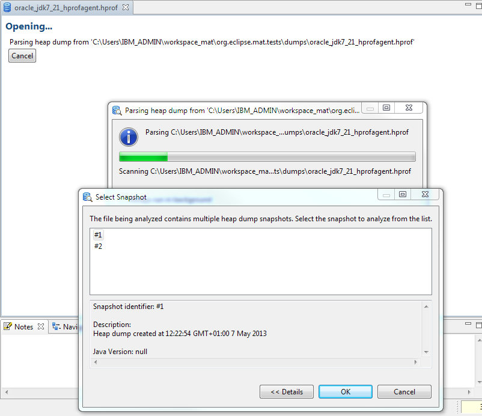

HPROF Binary Heap Dumps
Get Heap Dump on an OutOfMemoryError
One can get a HPROF binary heap dump on an OutOfMemoryError for Sun JVM (1.4.2_12 or higher and 1.5.0_07 or higher), HP-UX JVM (1.4.2_11 or higher) and SAP JVM (since 1.5.0) by setting the following JVM parameter:
-XX:+HeapDumpOnOutOfMemoryError
The heap dump is written to the work directory.
Interactively Trigger a Heap Dump
To get heap dump on demand one can add the following parameter to the JVM and press CTRL + BREAK in the preferred moment:
-XX:+HeapDumpOnCtrlBreak
HPROF agent
To use the HPROF agent to generate a dump on the end of execution, or on SIGQUIT signal use the following JVM parameter:
-agentlib:hprof=heap=dump,format=b
Alternatively, other tools can be used to acquire a heap dump:
System Dumps and Heap Dumps from IBM Virtual Machines
Minimum-required versions of IBM Virtual Machines to generate the dump are IBM JDK 1.4.2 SR12, 5.0 SR8a and 6.0 SR2 though previous versions may generate dumps usable with Memory Analyzer but with inaccurate root information
IBM Java 5.0 and Java 6 Virtual Machine dump options
-Xdump:system+heap+java:events=systhrow+user,filter=java/lang/OutOfMemoryError,request=exclusive+prepwalk+compact
Dump types:
Events:
Filter:
Request:
IBM Java 1.4.2 Virtual Machine dump options
A quick reference for IBM Java 1.4.2 Virtual Machine dump options
export JAVA_DUMP_OPTS=ONOUTOFMEMORY(SYSDUMP,HEAPDUMP,JAVADUMP)
set JAVA_DUMP_OPTS=ONOUTOFMEMORY(SYSDUMP,HEAPDUMP,JAVADUMP)
On non-z/OS systems process any system dump files with JExtract to give a .sdff file. On z/OS systems copy the SVC dump file in binary mode to your Eclipse Memory Analyzer system, giving it a .dmp file extension.
Acquire Heap Dump from Memory Analyzer
If the Java process from which the heap dump is to be acquired is on the same machine as the Memory Analyzer, it is possible to acquire a heap dump directly from the Memory Analyzer. Dumps acquired this way are directly parsed and opened in tool.
Acquiring the heap dump is a VM specific. Memory Analyzer comes with several so called heap dump providers - for Sun based VMs (needs a Sun JDK with jmap) and for IBM VMs (needs an IBM JDK). Also extension points are provided for adopters to plug-in their own heap dump providers.
To trigger a heap dump from Memory Analyzer open the menu item.
Depending on the concrete execution environment the pre-installed heap dump providers may work with their default settings and in this case a list of running Java processes should appear:
One can now from which process a heap dump should be acquired, provide a preferred location for the heap dump and press Finish to acquire the dump. Some of the heap dump providers may allow (or require) additional parameters (e.g. type of the heap dump) to be set. This can be done by going to the page of the wizard.
Configuring the Heap Dump Providers
If the process list is empty try to configure the available heap dump providers. To do this press Configure..., select a matching provider from the list and click on it. You can see then what are the required settings and specify them.
Multiple snapshots in one heap dump
-agentlib:hprof=heap=dump,format=bthen if a heap dump is triggered multiple times all the heap dumps will be written to one file. An IBM z/OS system dump can contain data from multiple address spaces and processes. It is therefore possible that the dump file contains heap dump snapshots from multiple Java runtimes.
Memory Analyzer 1.2 and earlier handled this situation by choosing the first heap dump snapshot found unless another was selected via an environment variable or MAT DTFJ configuration option.
Memory Analyzer 1.3 handles this situation by detecting the multiple dumps, then presenting a dialog for the user to select the required snapshot.
The index files generated have a component in the file name from the snapshot identifier, so the index files from each snapshot can be distinguished. This means that multiple snapshots from one heap dump file can be examined in Memory Analyzer simultaneously. The heap dump history for the file remembers the last snapshot selected for that file, though when the snapshot is reopened via the history the index file is also shown in the history. To open another snapshot in the dump, close the first snapshot, then reopen the heap dump file using the File menu and another snapshot can be chosen to be parsed. The first snapshot can then be reopened using the index file in the history, and both snapshots can be viewed at once.
Summary
The following table shows the availability of VM options and tools on the various platforms:
| Vendor | Release | VM Parameter | Sun Tools | SAP Tool | MAT | |||
|---|---|---|---|---|---|---|---|---|
| On out of memory | On Ctrl+Break | Agent | JMap | JConsole | JVMMon | acquire heap dump | ||
| Sun, HP | 1.4.2_12 | Yes | Yes | Yes | No | |||
| 1.5.0_07 | Yes | Yes (Since 1.5.0_15) | Yes | Yes (Only Solaris and Linux) | Yes (Only Solaris and Linux) | |||
| 1.6.0_00 | Yes | No | Yes | Yes | Yes | Yes | ||
| 1.7.0 | Yes | No | Yes | Yes | Yes | Yes | ||
| 1.8.0 | Yes | No | Yes | Yes | Yes | Yes | ||
| SAP | Any 1.5.0 | Yes | Yes | Yes | Yes (Only Solaris and Linux) | Yes | ||
| IBM | 1.4.2 SR12 | Yes | Yes | No | No | No | No | No |
| 1.5.0 SR8a | Yes | Yes | No | No | No | No | No | |
| 1.6.0 SR2 | Yes | Yes | No | No | No | No | No | |
| 1.6.0 SR6 | Yes | Yes | No | No | No | No | Yes | |
| 1.7.0 | Yes | Yes | No | No | No | No | Yes | |
| 1.8.0 Beta | Yes | Yes | No | No | No | No | Yes | |